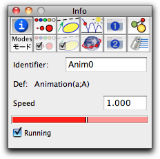

Animation

- The mover is a free element whose movement drives the animation.
- The road is an element incident to the mover. During the animation, the mover will be moved along the road.
Either you select the mover and the road in this order, or you click on a locus, which will select the mover and road of the locus. If the selected mover is either a "point on a line," a "point on a circle," or a "line through a point," then Cinderella automatically recognizes that there is a unique road and selects it for you. Currently, the following combinations of mover and road are supported:
- mover = point, road = line: The point moves along the line.
- mover = point, road = circle: The point moves along the circle.
- mover = line, road = point: The line rotates about the point.
After you have defined an animation, control devices are added to the main windows. The following picture shows Cinderella after an animation of a point on a circle road was added and started:
 |
| Animation of a rotating point |
Global Control of Animations
The main control device consists of three buttons and a speed slider in the lower left corner of the window. These controls refer to all animations. The precise meaning of the buttons is as follows:
 |
Start the animation |
 |
Pause the animation |
 |
Stop the animation |
If you stop a running a animation, the picture will return to its position before the animation started. If you stop a paused animation, you are able to continue from the position of the paused animation. The slider can be used to adjust the speed of an animation.
There are a few significant differences regarding animations compared to the older version Cinderella 1.4.
- After defining an animation, you have to explicitly start it by pressing the start button.
- While an animation is running you can still move the free elements of a construction.
- You can have more than one animated element. Each of the animations can be started or stopped individually by pressing the port buttons in the upper right of the picture.
Individual Control of Animations
The port button associated with an animation is also a handle for selecting the animation. For selecting an animation you must press and hold the shift key and click the associated port button. Selected animations are indicated by a highlighted border of the port button.
The properties of a selected animation can be changed in the inspector. In particular, the "Info" panel of the inspector can contain slots where you can adjust the speed of an animation. You can thereby adjust the relative speed of different animations. Animation speeds can even be set to negative values. In this way you can change the direction of an animation.
 |
| Inspecting animations |
In the inspector you can also start and stop an individual animation by checking the "Running" box.
Tracing Elements
It will often be desirable to emphasize the trace of moving elements visually while an animation is running. To do this, consider the section on tracing elements, which shows you how to create stunning visual effects. Tracing is often a very interesting alternative to creating an explicit locus.
Animations and CindyScript.
You can also control the speed of an animation via the CindyScript programming language. By default, the labels of the are "Anim0," "Anim1," …. If
Anim0 is the name of an animation, you can access the speed and running flags via the fields Anim0.speedand
Anim0.run. Thus a CindyScript code fragment likeAnim0.run=(A.x>0);
forces "Anim0" to run only if the x-coordinate of A is positive. Similarly, the fragment
Anim0.speed=B.x;
allows you to control the speed of "Anim0" via the x-coordinate of B.
Animations and CindyLab.
The main control panel (play/pause/stop) of animations is identical to the control panel of simulations in CindyLab. Thus all physics simulations are linked and synchronized with animated elements. Using this feature one can easily use animations to add motor-like devices to a physics simulation. The picture below, for instance, shows a simulated rubber band that is periodically driven by a point that moves up and down. The movement of the point is derived from an animated point that moves along a circle.
 |
| Animation of an oscillating wave |
HTML Export
In contrast to the old version of Cinderella, exported animations generate full access to the control panel. Thus the user can start, stop, and pause animations freely on an HTML page. One is also allowed to move free elements while an animation is running. For a detailed treatment of this issue we refer to the section HTML Export.
Synopsis
Start an animation by selecting a mover and a road.
Caution
The are many changes compared to Cinderella 1.4.
Page last modified on Wednesday 24 of August, 2011 [16:51:54 UTC].
The original document is available at
http://doc.cinderella.de/tiki-index.php?page=Animation